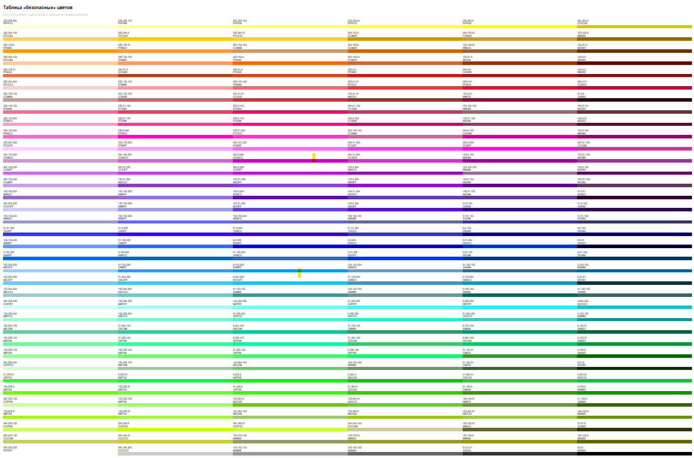

Безопасная палитра
Безопасная палитра применяется для корректного отображения цветов во всех браузерах без искажения.
Основной проблемой при публикации в сети является тот факт, что, если применяется оттенок,
не относящийся к 256 цветам из безопасной палитры, то браузеры пытаются подобрать схожий оттенок,
что может привести к искажению желаемого результата.
Любой из 216 цветов безопасной палитры может быть использован для графики, текста и фонов.
Эти цвета везде будут отображаться без искажений.
Палитра состоит из 32 сочетаний 6 оттенков красного, зеленого и синего. Эти градации - 00, 33, 66, 99, CC, FF.
